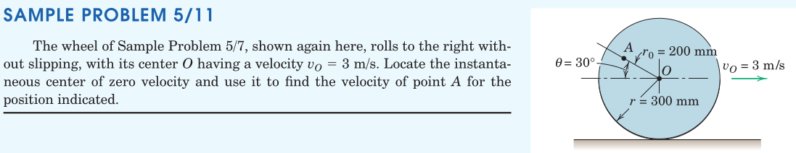
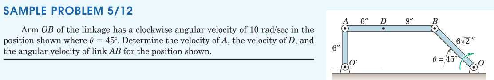
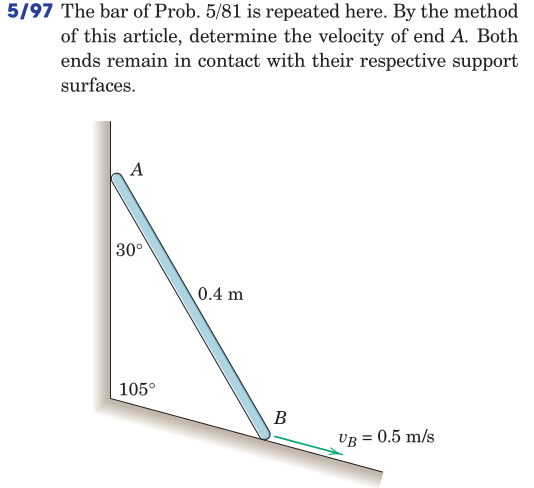
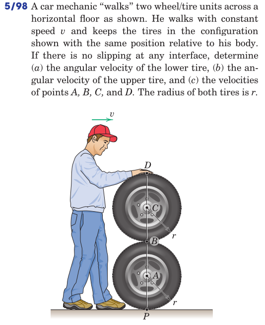
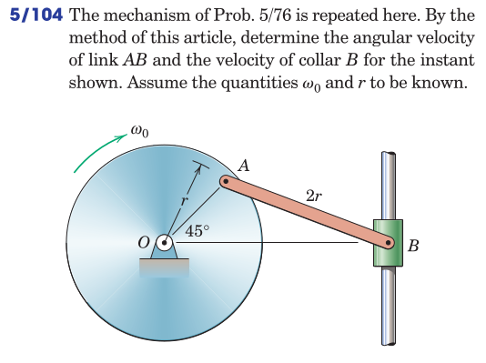
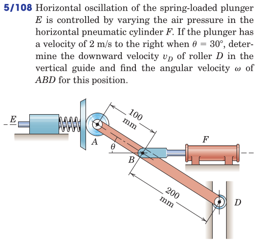
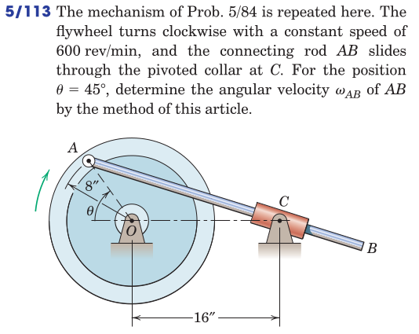
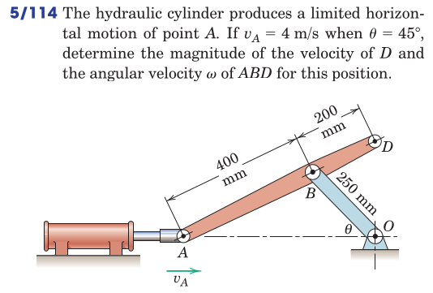
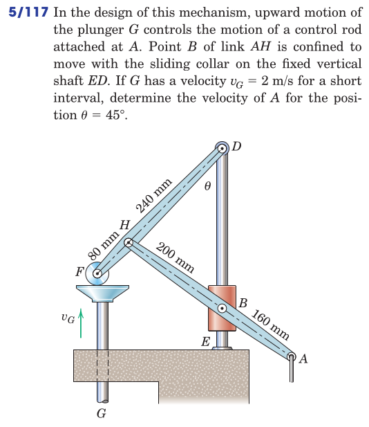

kinematics of bodies/relative velocity
Rigid-Body Kinematics
2025-11-30
Table of Contents
1. Relative Velocity
1.1. Between Two Point Masses
Remember the relative velocity expression for two point masses, each moving at its own with \(\boldsymbol{v}^a\) and \(\boldsymbol{v}^b\), separated by the position vector \(\boldsymbol{r}^{b/a}\)
[a freehand depiction of the operation stage]
Relative velocity signifies the difference between the velocities of the point masses \(\boldsymbol{v}^{b/a} = \boldsymbol{v}^b - \boldsymbol{v}^a\) which is sometimes just referred to as \(\boldsymbol{v}^{rel}\).
1.1.1. Parallel and Perpendicular Components
The relative velocity between two point masses can be split into its components parallel to (\(\parallel\)) and perpendicular to (\(\perp\)) the axis that joins them. These can be written as \(\boldsymbol{v}^{rel}_\parallel\) and \(\boldsymbol{v}^{rel}_\perp\)
Note that \(\boldsymbol{v}^{rel}_\parallel\) indicates the increase/decrease of distance between the two points, while \(\boldsymbol{v}^{rel}_\perp\) indicated the relative rotation of one point about the other, from which we can induce \(\boldsymbol{v}^{rel}_\perp = \boldsymbol{\omega} \times \boldsymbol{r}\) to determine the angular velocity vector.
1.2. Between Two Points of a Body
For two points on the same rigid body the expression of relative motion becomes slightly simplified as the distance between them never changes, in other words \(\boldsymbol{v}^{rel}_\parallel=0\), always.
Thus, it is always true that \[ \boldsymbol{v}^{rel} = \boldsymbol{v}^{rel}_\perp \]
[freehand depicting of observer sitting on the top of the body of an airliner at point \(A\), and as the airlines goes through roll, yaw and pitch motions, other points around him seem to be rotating in certain directions but not moving away or towards him]
This means that it will always be true for two points on the same rigid body that their relative motion can be expressed in terms of pure rotation
\[ \boldsymbol{v}^b = \boldsymbol{v}^a + \boldsymbol{\omega} \times \boldsymbol{r}^{b/a} \]
or inversely
\[ \boldsymbol{v}^a = \boldsymbol{v}^b + \boldsymbol{\omega} \times \boldsymbol{r}^{a/b} \]
Problems expressed in terms of relative motion can be solved directly by using the vector equation, or in terms of its scalar components. In many cases, a graphical approach is also known to work (graphical velocity analysis)
1.3. Examples


2. Instantaneous Center of Rotation (ICR)
The velocities of two points \(A\) and \(B\) on a rigid body are related by \[ \boldsymbol{v}^b = \boldsymbol{v}^a + \boldsymbol{v}^{b/a} \] where \(\boldsymbol{v}^{b/a} = \boldsymbol{\omega} \times \boldsymbol{r}^{b/a}\).
[freehand depiction of a body with two of its points labeled and their velocity arrows assigned. Location of the instantaneous centre \(C\) is shown by intersecting lines perpendicular to velocities.]
The velocity of any point can be expressed with respect to the instantaneous centre as
- The ICR may or may not be physically located on the body.
- The ICR is not necessarily a “fixed point” in space.
Examples:
- the case of a propeller
- the case of a link with parallel velocities
2.1. The Centrodes Loci
- The path line traversed by a point \(X\) forms a so called locus of that point.
- The locus of the ICR (point \(C\) above) formed with respect to an inertial frame is known as the space centrode.
- The locus of the same point \(C\) formed with respect to a frame attached to the body is known as the body centrode.
[ freehand depiction of the space and body centrodes of a rolling wheel ]
2.2. Examples









3. Review
From Hibbeler, Engineering Mechanics: Dynamics: Chapter 16: